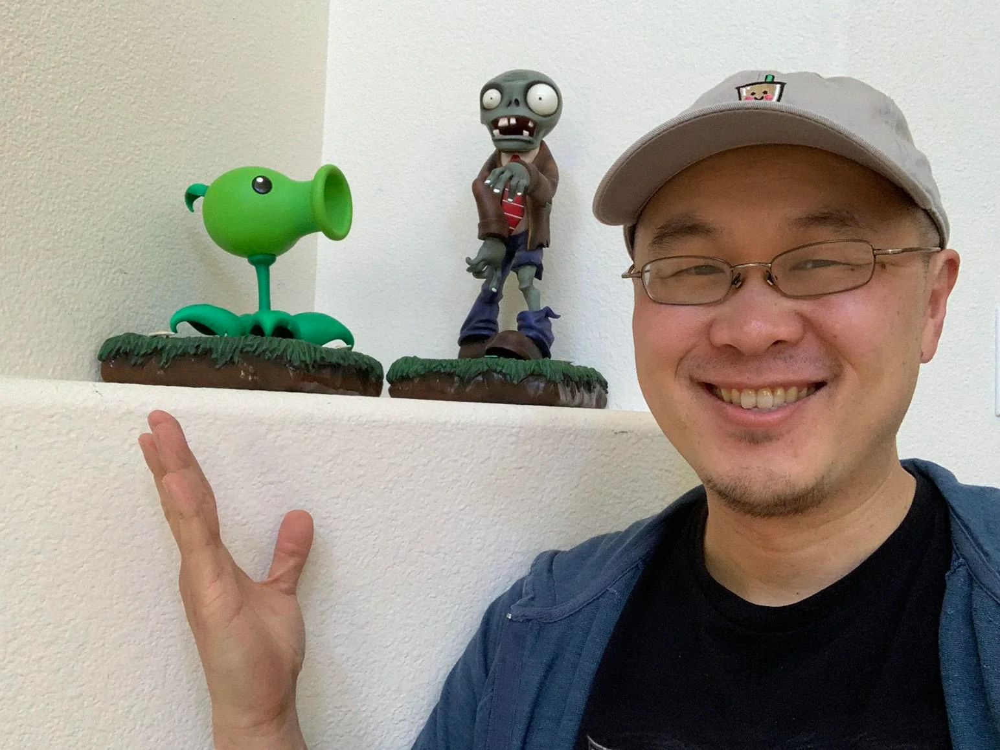

Equipe
Por trás das defesas de girassóis e dos ataques de zumbis, há uma equipe dedicada que cultiva este vasto almanaque do universo Plants vs. Zombies. Conheça os desenvolvedores que transformaram sementes de ideia em um jardim de informações!
Emanuel Rodrigues
Designer e Desenvolvedor
Emanuel, cujo nome significa "Deus conosco", traz a luz da sabedoria divina para nosso trabalho. Sua mente iluminada concebe os mais profundos insights, guiando-nos como uma estrela no firmamento.
Pedro
Arthur
Programador
Pedro Arthur, cujo nome evoca a pedra fundamental e a nobreza arturiana, é o arquiteto de nossa obra. Suas mãos abençoadas transformam o divino em matéria, erguendo estruturas que honram o Criador.
Miguel
Sthevão
Programador e Pesquisador
Miguel Sthevão, cujo nome evoca o poder do arcanjo e a firmeza do primeiro mártir, dedica-se a trazer a clareza e a luz para cada detalhe deste projeto. Sua meticulosa atenção garante que a verdade se manifeste sem sombras, revelando a glória de cada informação neste vasto jardim de conhecimento.